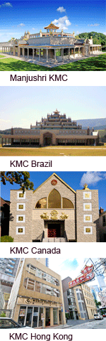

At the Northwest Dharma Celebration, we have the special opportunity to enjoy teachings, spiritual friends, a serene and pure environment – and at the same time contribute to the International Temples Project (ITP). Profits raised by the NWDC are dedicated for public benefit to the ITP and used for the development of the KMCs and Temple Projects throughout the world.
The International Temples Project was established by Venerable Geshe Kelsang Gyatso with the vision to build a Kadampa Buddhist Temple in every major city in the world.
These Temples are dedicated to world peace and everyone is welcome to visit them and enjoy the peace and tranquility they provide.
‘Just looking at a Temple with a happy mind places good imprints on our mind and brings inner peace.'
‘Through the power of this special object, problems such as anger and attachment are reduced.’ Venerable Geshe Kelsang Gyatso'
The ITP is funded by donations and by profits from:
Each year there is an International Temples Day on which Kadampa centers worldwide celebrate the International Temples Project.